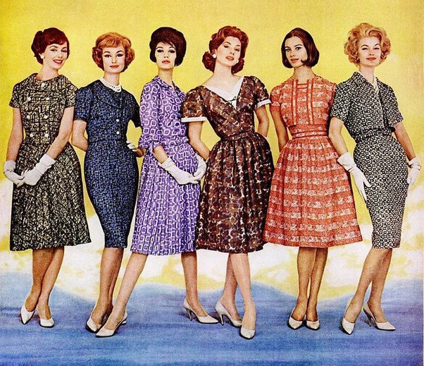

60s
In the 1960s, fashion saw a revolutionary shift, with the rise of mod styles characterized by bold colors, geometric patterns, and mini skirts. The decade also popularized sleek, tailored silhouettes for both men and women, accompanied by statement accessories like go-go boots and oversized sunglasses.